คู่มือการใช้งานระบบ BOP Express
Operations Workspace — งานขาย, ชิปเมนต์, การเงิน และการดูแลระบบ ในที่เดียว
URL ระบบ: https://bopexpress.online/backend
เริ่มต้น
ภาพรวมระบบ & การเข้าสู่ระบบ
BOP Express เป็นระบบบริหารงานขนส่งสินค้าระหว่างประเทศ (freight forwarding) แบบครบวงจร ครอบคลุมตั้งแต่การเสนอราคา → เปิดงานชิปเมนต์ → จัดการเอกสาร/พิธีการศุลกากร → การเงิน/เบิกจ่าย → ออกใบแจ้งหนี้และเอกสารภาษี
- เปิดเบราว์เซอร์ไปที่
https://bopexpress.online/backend/login - กรอกอีเมล/ชื่อผู้ใช้ และรหัสผ่านของคุณ แล้วกดเข้าสู่ระบบ
- เมื่อเข้าสำเร็จจะพบ Operations Dashboard เป็นหน้าแรก
- เมนูด้านซ้าย แบ่งเป็น 4 หมวด: OPERATIONS, FINANCE, MASTER DATA, ADMINISTRATION (กดปุ่มลูกศรบนแถบเมนูเพื่อย่อ/ขยายได้)
- มุมขวาบน แสดงชื่อผู้ใช้และบทบาท (เช่น Super Admin) พร้อมปุ่ม Profile และ Logout
- วันที่ ในเอกสารส่วนใหญ่แสดงเป็น พ.ศ. (เช่น 15/07/2569)
ขั้นตอนการทำงานหลัก (Workflow)
ลำดับงานหลักของระบบเชื่อมโยงกันดังนี้
- ใบเสนอราคา (Quotation) — สร้างใบเสนอราคาให้ลูกค้า ระบุประเภทงานและรายการค่าบริการ
- Quotation Activities — ใส่รายละเอียดต้นทุน/กิจกรรมย่อย แล้ว ส่งอนุมัติ
- ใบสั่งขาย (Sales Order) — สร้างจากใบเสนอราคาที่อนุมัติแล้ว
- งานชิปเมนต์ (Shipment Job) — เปิดงานจากใบเสนอราคาที่อนุมัติ จัดการเอกสาร ตู้ พิธีการศุลกากร
- การเงิน (เบิกเงินทดรอง) — เบิกเงิน → อนุมัติเงิน → จ่ายเงิน → เคลียร์เงิน และบันทึก Shipment Expenses
- ออกใบแจ้งหนี้ — Sales Invoices / Shipment Invoices แล้วออกใบเสร็จ/ใบกำกับภาษี (Tax Documents)
Master Data เป็นข้อมูลตั้งต้นที่ป้อนให้ dropdown ทุกหน้า (ลูกค้า, ผู้ขาย, สินค้า/บริการ, ท่าเรือ ฯลฯ) และ Administration ควบคุมผู้ใช้/สิทธิ์/สถานะ/การตั้งค่าระบบ
หมวด Operations
1.Dashboard
หน้าสรุปภาพรวมงานปฏิบัติการ (Operations Dashboard) เห็นสถานะงานสำคัญได้ในหน้าเดียว
- การ์ดตัวเลข (KPI): ALL JOBS, IMPORT, EXPORT, ETA IN 3 DAYS, MISSING DOCUMENTS, CUSTOMS PENDING
- ปุ่ม Open Shipment Workspace — เข้าสู่พื้นที่จัดการงานชิปเมนต์
- Latest Documents — เอกสารที่อัปโหลดล่าสุด (Job No / Type / File) พร้อมลิงก์ Missing docs report
- Latest Status Changes — การเปลี่ยนสถานะล่าสุด พร้อมลิงก์ Audit log
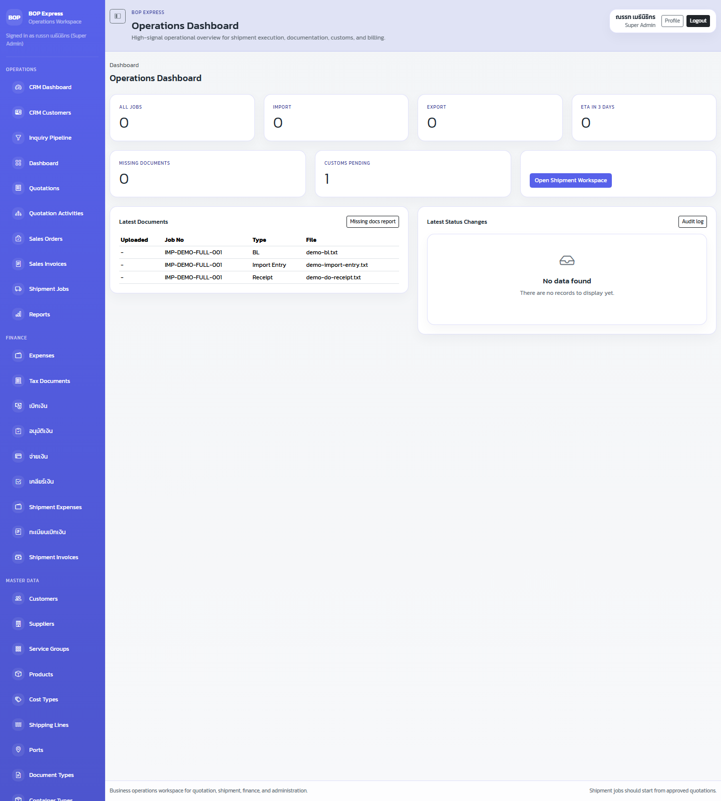
2.CRM Dashboard — แดชบอร์ด CRM
ภาพรวมกระบวนการขายและงานติดตาม — สรุปสถานะ Inquiry (โอกาสการขาย) ทั้งหมดในหน้าเดียว
- การ์ดตัวเลข (KPI): งานที่กำลังดำเนินการ, งานติดตามเกินกำหนด, ส่งใบเสนอราคาแล้ว, ปิดการขายสำเร็จ
- ปุ่ม + สร้าง Inquiry — เปิดโอกาสการขาย/คำถามลูกค้ารายการใหม่
- ปุ่มสลับภาษา TH / EN (มุมขวาบน) — โมดูล CRM รองรับทั้งไทยและอังกฤษ
- แผง "Inquiry ล่าสุด" — ตารางล่าสุด: เลขที่, ลูกค้า, รูปแบบขนส่ง, สถานะ, วันติดตาม พร้อมลิงก์ ดูทั้งหมด ไปหน้ากระบวนการขาย
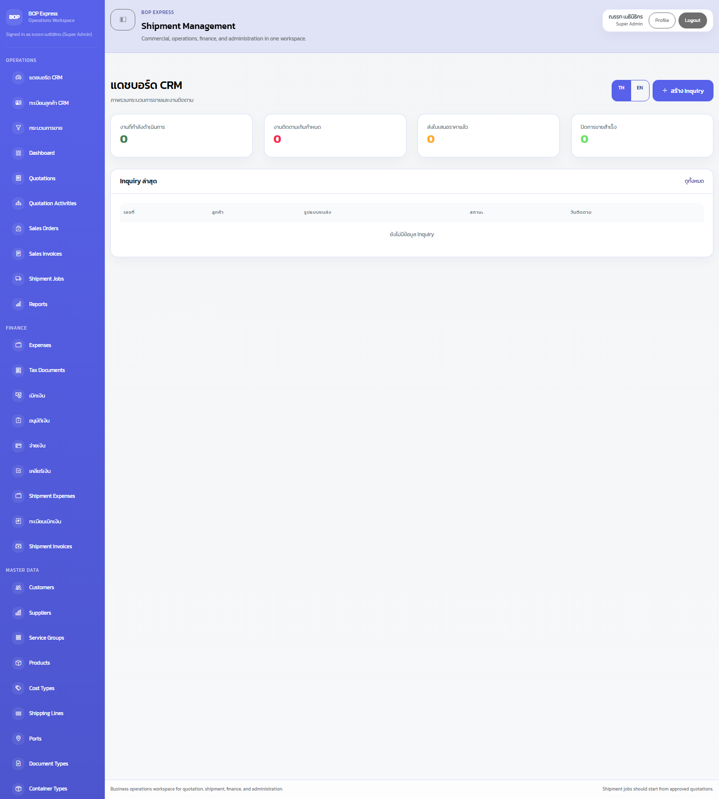
3.CRM Customers — ทะเบียนลูกค้า CRM
ข้อมูลลูกค้า ผู้ติดต่อ ทีมดูแล และบริษัทผู้ดำเนินงาน — มุมมองลูกค้าแบบ 360°
- ใช้ช่อง ค้นหา หาด้วยชื่อลูกค้า, รหัส หรือรายละเอียด
- กดปุ่ม ข้อมูลลูกค้า 360° ที่แถวของลูกค้าเพื่อดูรายละเอียดเชิงลึก (ผู้ติดต่อ ทีมดูแล เอกสาร)
- กดปุ่ม สร้างลูกค้า (มุมขวาบน) เพื่อเพิ่มลูกค้าใหม่
- มีปุ่มสลับภาษา TH / EN เช่นเดียวกับหน้า CRM อื่น
คอลัมน์: CODE, ลูกค้า, ผู้ติดต่อ, โทรศัพท์, สถานะ
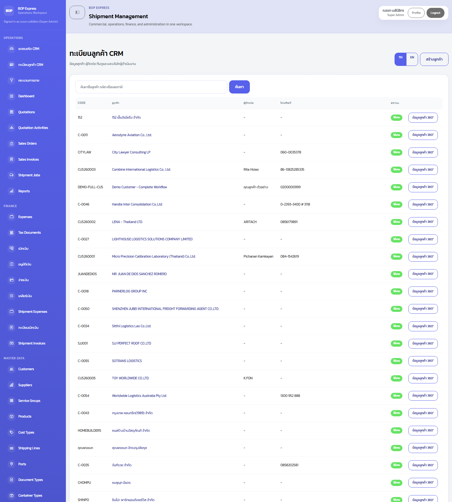
4.Inquiry Pipeline — กระบวนการขาย
กระดานติดตาม "Inquiry" (คำถาม/โอกาสการขายจากลูกค้า) ตั้งแต่รับเรื่องจนถึงส่งราคาและปิดการขาย
- กด + สร้าง Inquiry เพื่อเปิดโอกาสการขายใหม่ (ระบุลูกค้า รูปแบบขนส่ง ความเร่งด่วน)
- ใช้ช่อง ค้นหา (เลข Inquiry / ลูกค้า / รายละเอียดงาน) และตัวกรอง สถานะ หรือติ๊ก เฉพาะงานเกินกำหนด แล้วกด กรอง
- อัปเดตสถานะแต่ละ Inquiry ไล่ตามขั้นตอนการขาย
คอลัมน์: เลขที่, ลูกค้า, วันที่, ความเร่งด่วน, รูปแบบขนส่ง, สถานะ, ขั้นตอนถัดไป/วันติดตาม
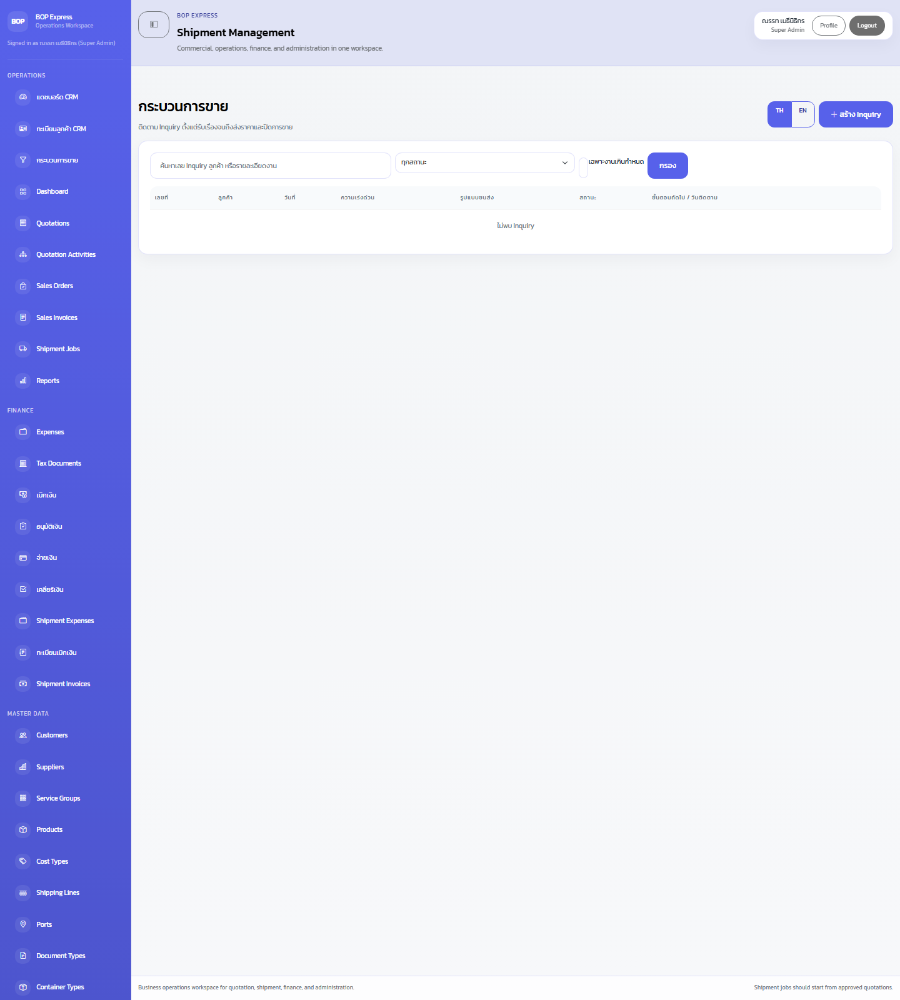
5.Quotations — ใบเสนอราคา
รายการใบเสนอราคาทั้งหมด และจุดเริ่มต้นของกระบวนการขาย
- คอลัมน์: เลขที่ (เช่น QT2026070004), วันที่, ลูกค้า, ยอดรวม, สถานะ
- สถานะ: แบบร่าง ส่งแล้ว หมดอายุ
- ปุ่มในแต่ละแถว: ดู (👁), แก้ไข ✏ (เฉพาะแบบร่าง), ลบ 🗑 (เฉพาะแบบร่าง), พิมพ์ 🖨
- เลขที่ใบเสนอราคา — สร้างอัตโนมัติ
- วันที่ * และ ใช้ได้ถึง * — วันที่ออกและวันหมดอายุ
- ลูกค้า * — เลือกจากรายชื่อลูกค้า
- เรื่อง — หัวข้อ/รายละเอียดงาน
- ประเภทงาน — เลือก 1 ประเภท
- ข้อมูลประกอบการเสนอราคา (BOP checklist) — สรุป requirement ก่อนคิดราคา เช่น ประเภทธุรกิจ, สิทธิประโยชน์ที่ถือครอง
- รายการสินค้า/บริการ — เพิ่มรายการค่าบริการจากแค็ตตาล็อก (ดูหัวข้อ Products)
- สรุปยอด (แผงขวา): ยอดรวม, ส่วนลด %, หลังหักส่วนลด, VAT % (ค่าเริ่มต้น 7), ภาษีมูลค่าเพิ่ม, ยอดสุทธิ
ปุ่ม: โหลดตัวอย่างงาน BOP / บันทึก / บันทึกใบเสนอราคา / ยกเลิก
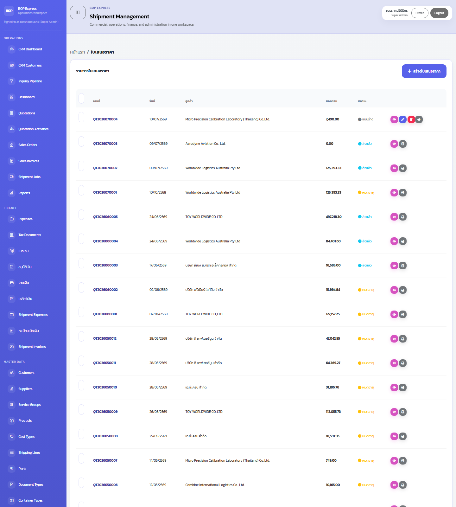
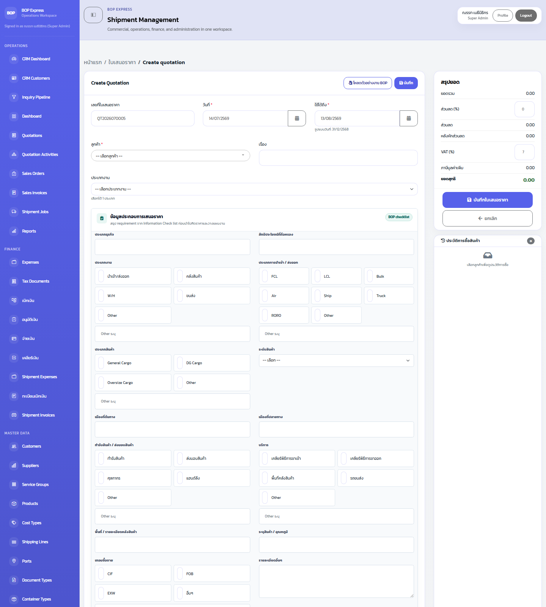
6.Quotation Activities
จัดการรายการย่อย/โน้ต และต้นทุนของแต่ละใบเสนอราคา พร้อมส่งอนุมัติ
- เลือกใบเสนอราคาจาก dropdown Quotation
- ในตารางแต่ละรายการจะเห็น ประมาณการ/ต้นทุนจริง (Plan vs Actual) — กดปุ่ม + เพื่อเพิ่มต้นทุนหรือกิจกรรมย่อย
- กด ส่งอนุมัติ / Submit approval เมื่อพร้อม, หรือ จัดการ Templates เพื่อใช้เทมเพลตซ้ำ
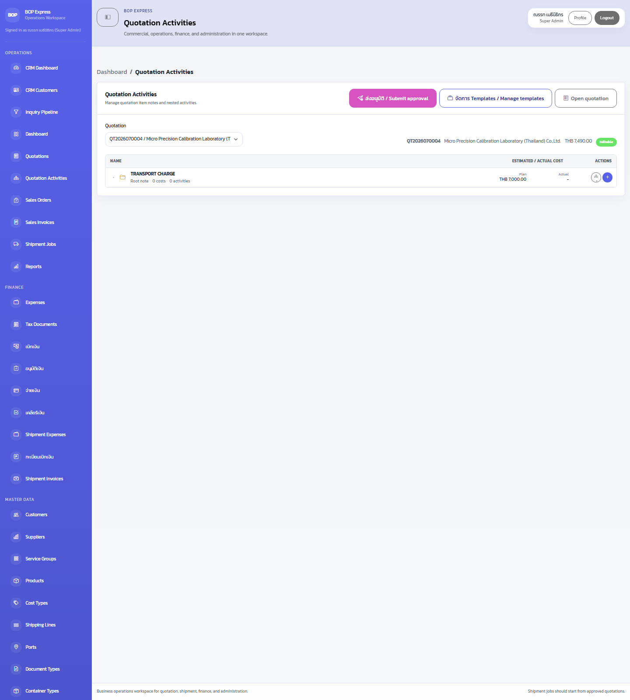
7.Sales Orders — ใบสั่งขาย
เอกสารใบสั่งขายที่สร้างจากใบเสนอราคาที่อนุมัติแล้ว หรือสร้างเองแบบ manual
- คอลัมน์: เลขที่ (เช่น SO2026030001), วันที่, ลูกค้า, ยอดรวม, สถานะ
- กดปุ่ม + สร้างใบสั่งขาย เพื่อเพิ่มรายการใหม่ และปุ่มดู (👁) ที่แต่ละแถว
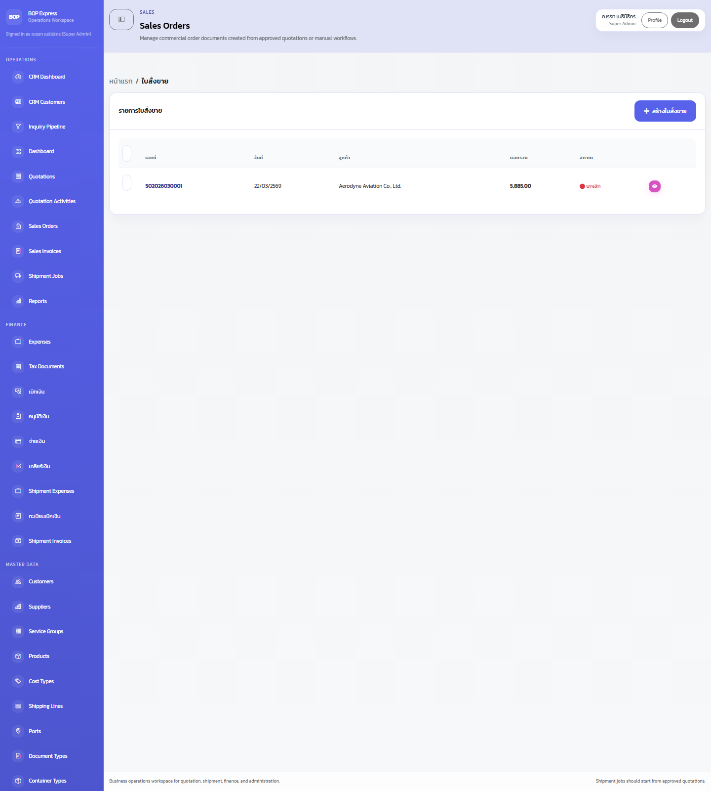
8.Sales Invoices — ใบแจ้งหนี้
ติดตามอายุหนี้ (aging) การเก็บเงิน และความพร้อมของเอกสารภาษี
- การ์ดสรุป: ยอดค้างชำระทั้งหมด, ใกล้ครบกำหนด (7 วัน), ยอดใกล้ครบกำหนด, เกินกำหนด
- คอลัมน์: เลขที่, วันที่, ครบกำหนด, ลูกค้า, ประเภทเอกสาร, ยอดรวม, ชำระแล้ว, คงค้าง, สถานะ (เกินกำหนด)
- ปุ่มในแต่ละแถว: ดู 👁, พิมพ์ 🖨, บันทึกรับชำระ 💲, ยกเลิก 🚫
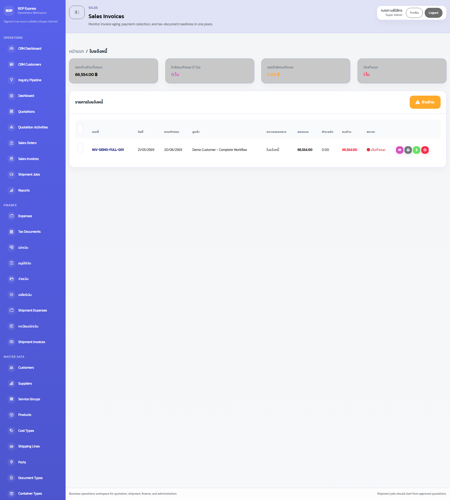
9.Shipment Jobs
สร้าง กรอง และจัดการงานนำเข้า/ส่งออก (สร้างจากใบเสนอราคาที่อนุมัติ)
- Search — Job no, BL no, quotation
- Shipment Type (ประเภทงาน), Customer (ลูกค้า), Status (สถานะ)
- ETA Range / ETD Range — ช่วงวันถึง/วันออก (From–To)
- กด Apply Filters เพื่อค้นหา หรือ Reset เพื่อล้าง
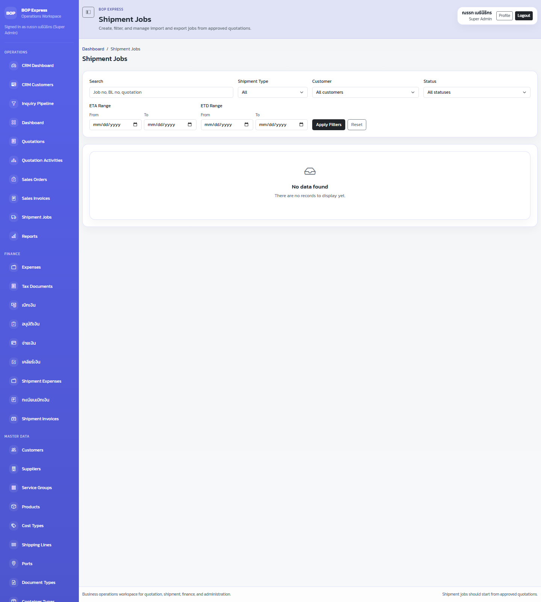
10.Reports
รายงานชิปเมนต์แบบตารางที่พร้อม export และกรองตามช่วงวันที่
- เลือกประเภทรายงานจาก dropdown Report (เช่น Shipment jobs by date)
- กำหนด Date From – Date To
- กด Run เพื่อแสดงผล (ตารางออกแบบมาให้คัดลอก/ส่งออกง่าย)
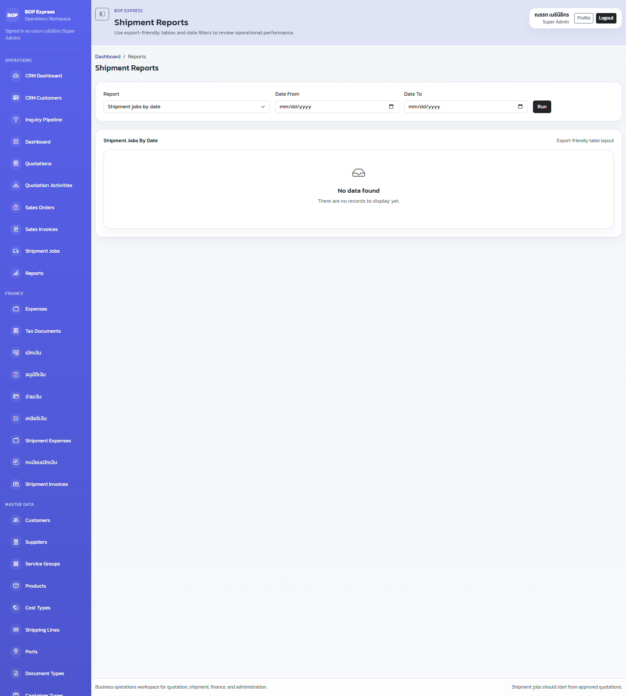
หมวด Finance
PCR11.Expenses — นำเข้าค่าใช้จ่าย (OCR)
อัปโหลดเอกสารค่าใช้จ่าย แล้วให้ระบบอ่านข้อมูลอัตโนมัติด้วย OCR (OpenAI)
- กด Choose File เลือกไฟล์ (รองรับ PDF/JPG/PNG/WEBP/TXT/CSV ขนาดไม่เกิน 20MB)
- เปิดสวิตช์ Auto OCR เพื่อให้ระบบอ่านข้อมูลอัตโนมัติ
- กด Upload — เอกสารจะเข้าคิว Imported Documents (OCR Queue)
- ตรวจผล OCR ในตาราง (VENDOR, DOC NO, DATE, TOTAL, ITEMS, CONFIDENCE) แล้วยืนยันเป็น draft ค่าใช้จ่าย
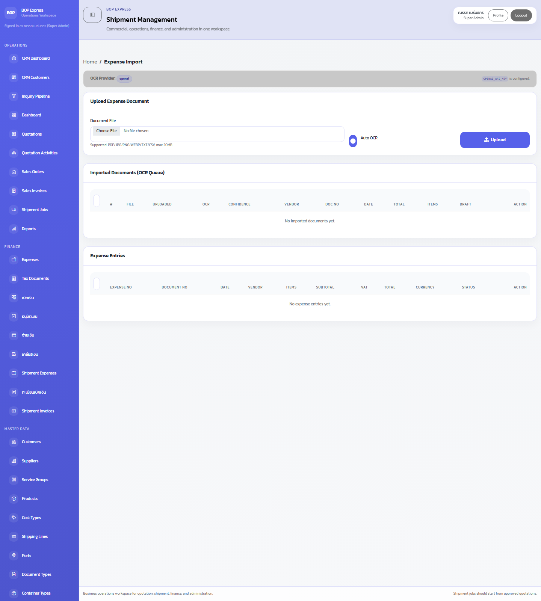
12.Tax Documents — ใบเสร็จ/ใบกำกับภาษี
รวมเอกสารภาษีที่ออกแล้ว พร้อมสรุปยอดและ VAT
- ปุ่มช่วงเวลา: เดือนนี้ / เดือนก่อน / 3 เดือนย้อนหลัง / ปีนี้ / ทั้งหมด
- ตัวกรอง: เดือน, ตั้งแต่วันที่–ถึงวันที่, ประเภทเอกสาร, ลูกค้า
- การ์ดสรุป: เอกสารทั้งหมด, ยอดรวม, ภาษีมูลค่าเพิ่ม (VAT), ใบแจ้งหนี้/ใบกำกับภาษี, ใบเสร็จ/ใบกำกับภาษี, ใบเสร็จรับเงิน
- คอลัมน์: เลขที่เอกสาร, วันที่, ประเภท, ลูกค้า, เลขผู้เสียภาษี, ยอดเงิน, VAT, อ้างอิง
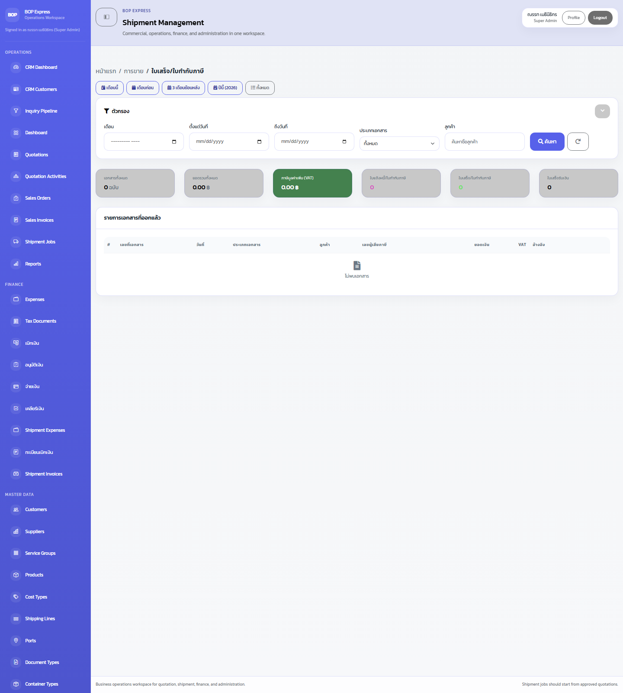
13.เบิกเงิน — Cash Request Intake
เตรียมและส่งคำขอเบิกเงินทดรองสำหรับงาน Shipment
- สร้างคำขอเบิก โดยผูกกับงาน Shipment (Job/BL/Booking/Quotation) และระบุรายการที่จะใช้เงิน
- ตรวจสถานะผ่านแท็บ: ร่าง / รออนุมัติ / บัญชีรอยืนยันยอด / ทั้งหมด
- เมื่อพร้อมส่ง คำขอจะเข้าสู่ขั้นตอน อนุมัติเงิน ต่อไป
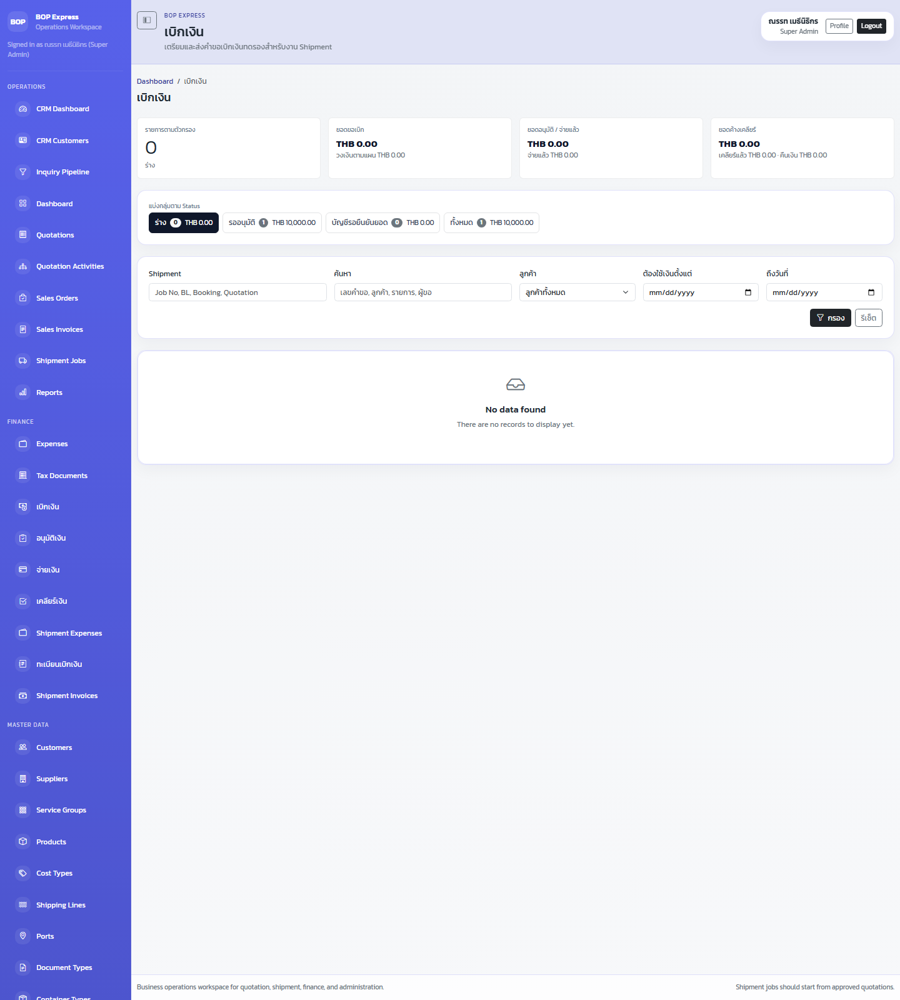
14.อนุมัติเงิน — Money Approvals
ตรวจว่าคำขอแต่ละรายการใช้ทำอะไร ของใคร และอนุมัติเฉพาะจำนวนที่ควรจ่าย
- ดูรายละเอียดการใช้เงิน และงาน/ลูกค้าที่เกี่ยวข้อง (เทียบ แผน vs ขออนุมัติ)
- กรอก ยอดอนุมัติ ในช่อง Action (แก้ไขได้ ไม่จำเป็นต้องเท่ายอดที่ขอ) และใส่หมายเหตุ
- ยืนยันการอนุมัติ — รายการจะไปสู่ขั้น จ่ายเงิน
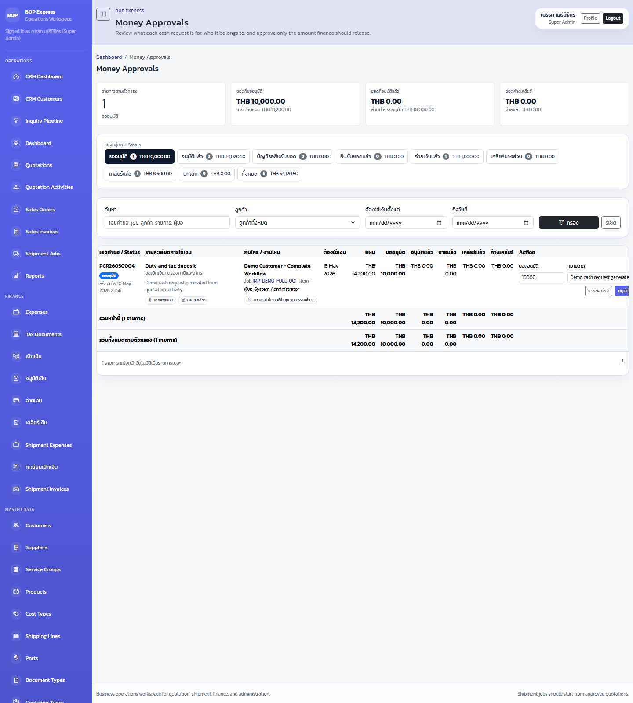
15.จ่ายเงิน — Disbursements
คิวรายการที่อนุมัติแล้ว รอยืนยันยอด และรอฝ่ายบัญชีจ่ายเงิน
- ฝ่ายบัญชียืนยันยอดและบันทึกการจ่ายเงินจริง (ใส่หมายเหตุบัญชีในช่อง Action)
- ติดตามผ่านแท็บสถานะ: อนุมัติแล้ว / บัญชีรอยืนยันยอด / ยืนยันยอดแล้ว / จ่ายเงินแล้ว
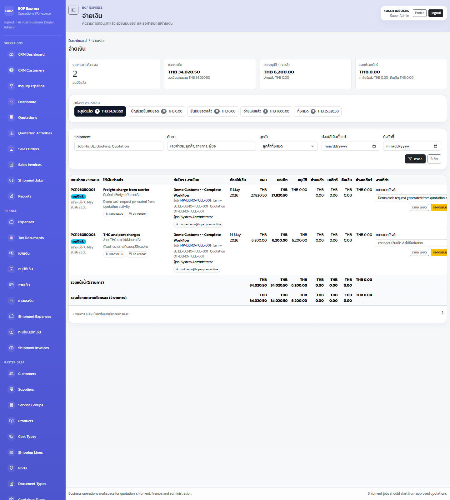
16.เคลียร์เงิน — Settlements
ติดตามเงินที่จ่ายแล้ว และรอบิลจริงหรือเงินคืนมาเคลียร์
- จับคู่เงินทดรองที่จ่ายไปกับบิล/ค่าใช้จ่ายจริง และบันทึกเงินคืน (ช่อง เงินคืนสะสม)
- ติดตามคอลัมน์ เคลียร์ / คืนเงิน / ค้างเคลียร์ ผ่านแท็บ จ่ายเงินแล้ว / เคลียร์บางส่วน / เคลียร์แล้ว
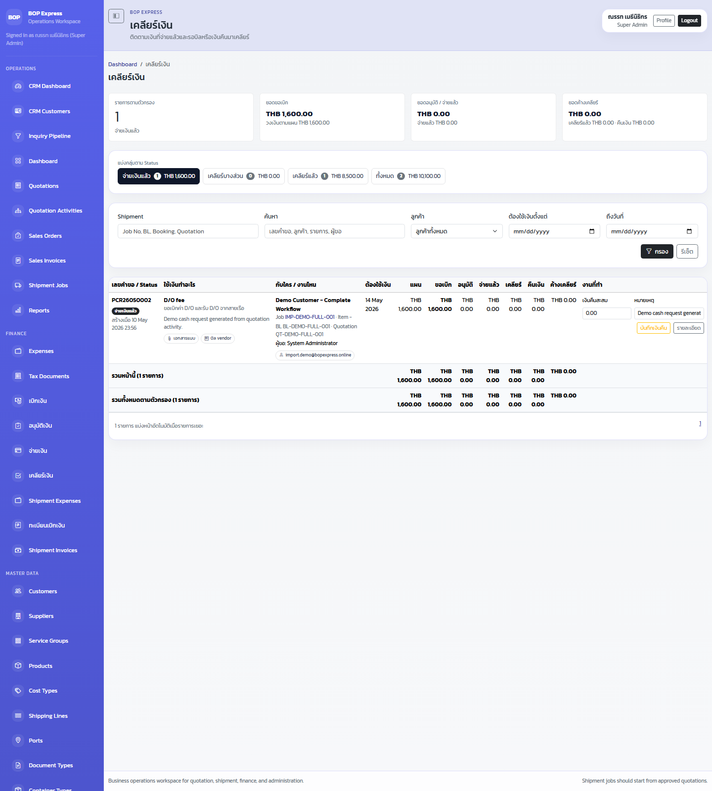
17.Shipment Expenses
ติดตามต้นทุนจริงของงาน แยกตามงาน ลูกค้า และสถานะการจ่าย
- ตัวกรอง: Customer, Payment Status, Date From–To
- คอลัมน์: Date, Job No, Customer, Type (เช่น transport), Description, Vendor, Amount, Status (paid)
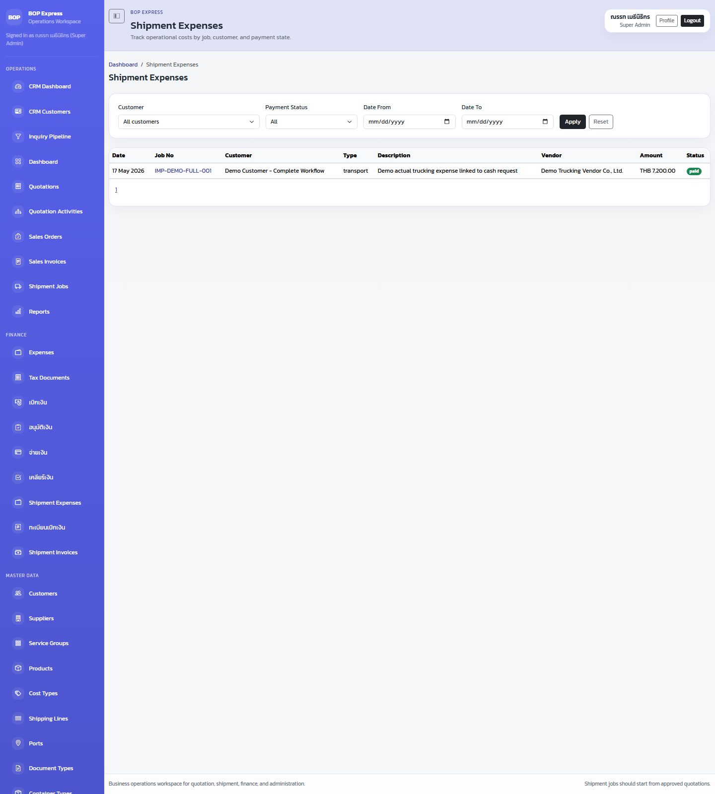
18.ทะเบียนเบิกเงิน — Register
รายการเบิกเงินทั้งหมดทุกสถานะ สำหรับตรวจสอบย้อนหลัง (audit)
เป็นทะเบียนกลางรวมคำขอเบิกเงินทุกใบในทุกสถานะ ใช้ค้นหา/กรองเพื่อดูประวัติและกระทบยอด เหมาะสำหรับฝ่ายบัญชีและการตรวจสอบ
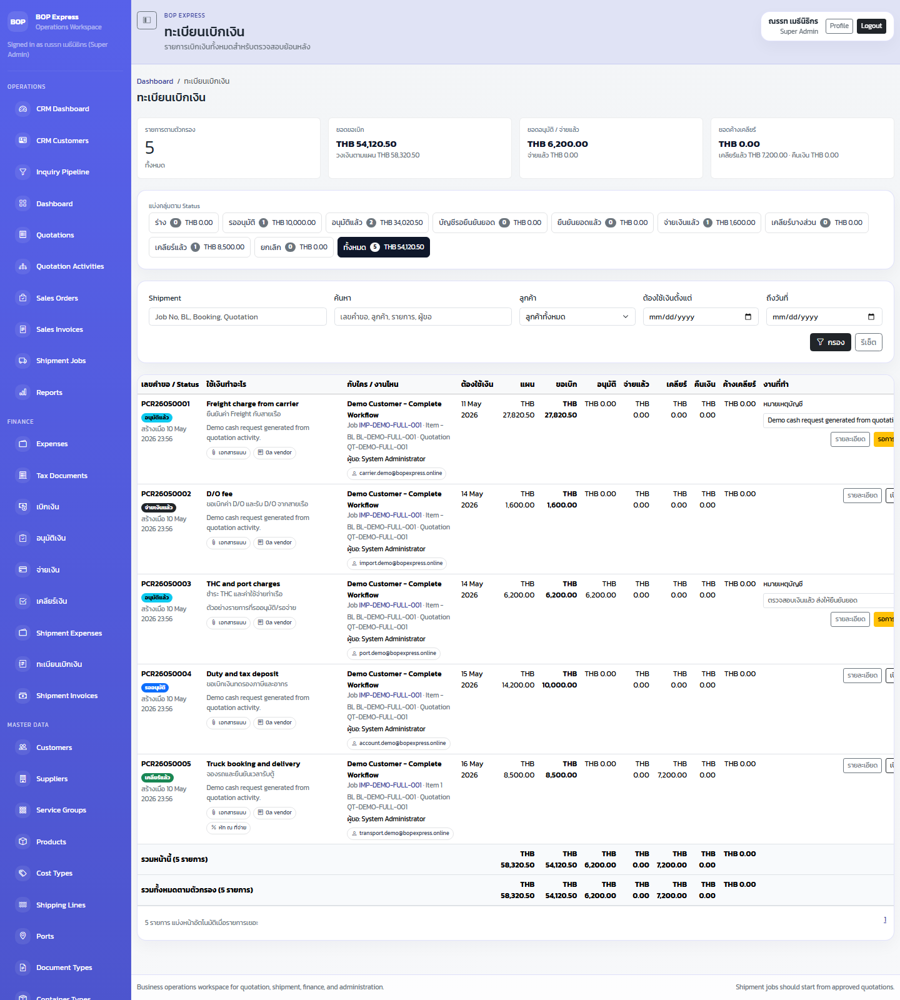
19.Shipment Invoices
จัดการใบแจ้งหนี้ที่ผูกกับงานชิปเมนต์โดยตรง
- ตัวกรอง: Customer, Status, Date From–To
- คอลัมน์: Invoice No, Date, Job No, Customer, Total, Status (overdue)
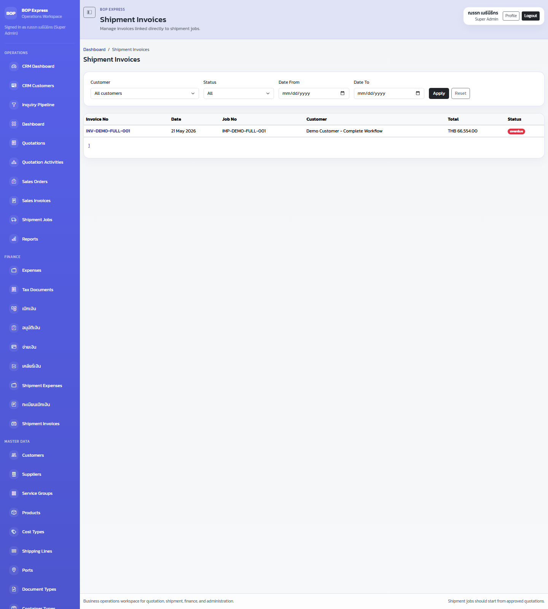
หมวด Master Data
20.Customers
ทะเบียนลูกค้า (ป้อนให้ dropdown ลูกค้าทุกหน้า) — ปุ่มสร้าง: เพิ่มลูกค้า
คอลัมน์: Code, Customer, Contact, Phone, Email, Status
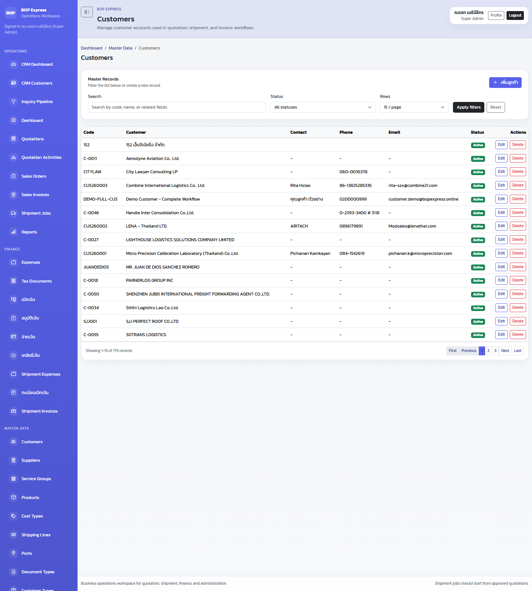
21.Suppliers
ทะเบียนผู้ขาย/ตัวแทน (vendor) — รหัสขึ้นต้น V-
คอลัมน์: Code, Supplier, Phone, Website, Sales Contact, Status
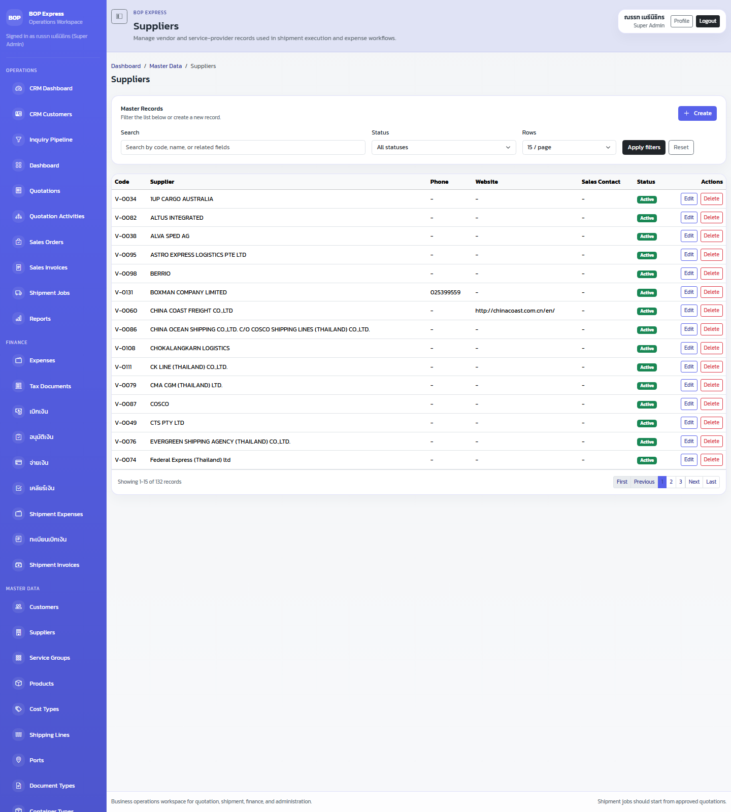
22.Service Groups
กลุ่มบริการ พร้อมการแมปบัญชี (GL) และสถานะ VAT/ค่าใช้จ่าย/เครดิต/หัก ณ ที่จ่าย
คอลัมน์: Code, Name, GL, VAT, Expense, Credit, WHT, Status — เช่น SRV (ค่าบริการ), SLC (Local Charges), CST (Costs), ADV (Credit Advances), EX-P (ค่าใช้จ่ายบริษัท), ATL (Additional), ERN (Deposit Container)
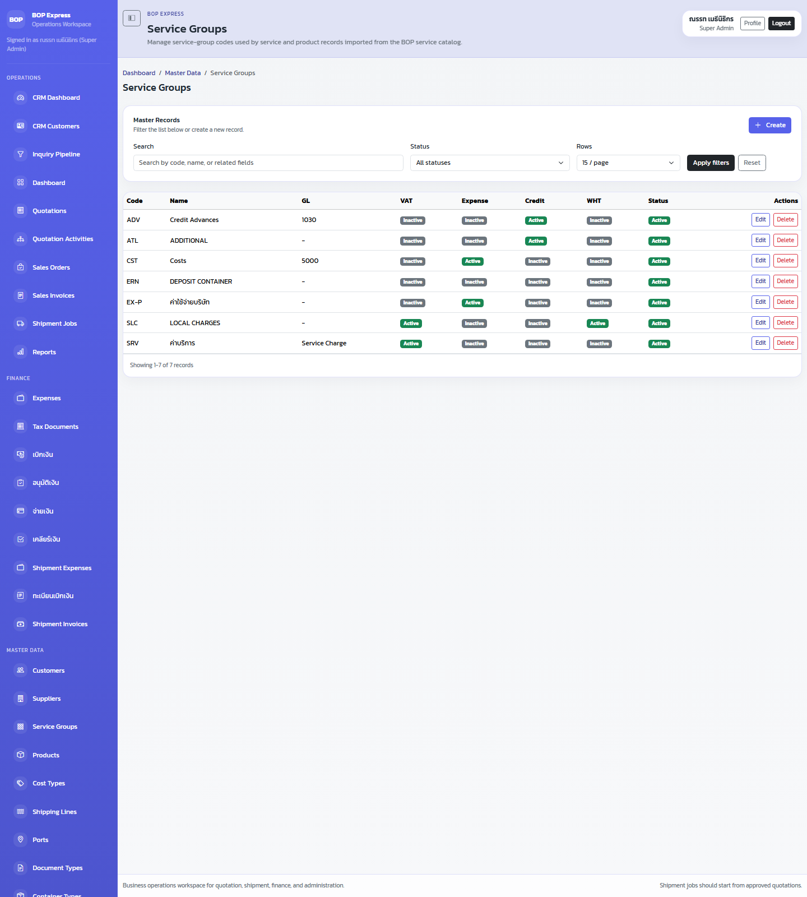
23.Products & Services
แค็ตตาล็อกสินค้า/บริการและค่าใช้จ่าย ใช้เป็นรายการตั้งต้นในใบเสนอราคา (มีมากกว่า 240 รายการ)
- ปุ่มสร้าง: Add Product / Service
- คอลัมน์: CODE, NAME, ENGLISH NAME, SERVICE GROUP, CURRENCY, UNIT, SELL PRICE, COST, VAT, STATUS
- ครอบคลุมค่าบริการชิปปิ้งครบ เช่น Freight, THC, D/O Fee, Customs Clearance, Handling, Transport ฯลฯ (หน่วยหลากหลาย: SHP, CNTR, RT, CBM, SET…)
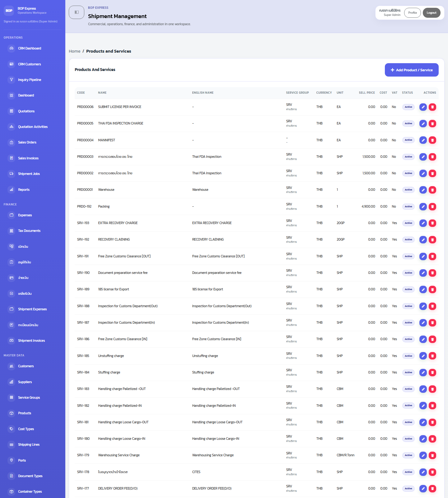
24.Cost Types — ประเภทต้นทุน
ประเภทต้นทุนสำหรับจัดหมวดค่าใช้จ่าย — ปุ่มสร้าง: เพิ่มประเภทต้นทุน
คอลัมน์: รหัส, ชื่อประเภทต้นทุน, รหัสบัญชี, รายละเอียด, สถานะ — เช่น SHP (ค่าขนส่ง), LAB (ค่าแรง), OVH (ค่าโสหุ้ย), PKG (บรรจุภัณฑ์), MAT (วัตถุดิบ), OTH (อื่นๆ)
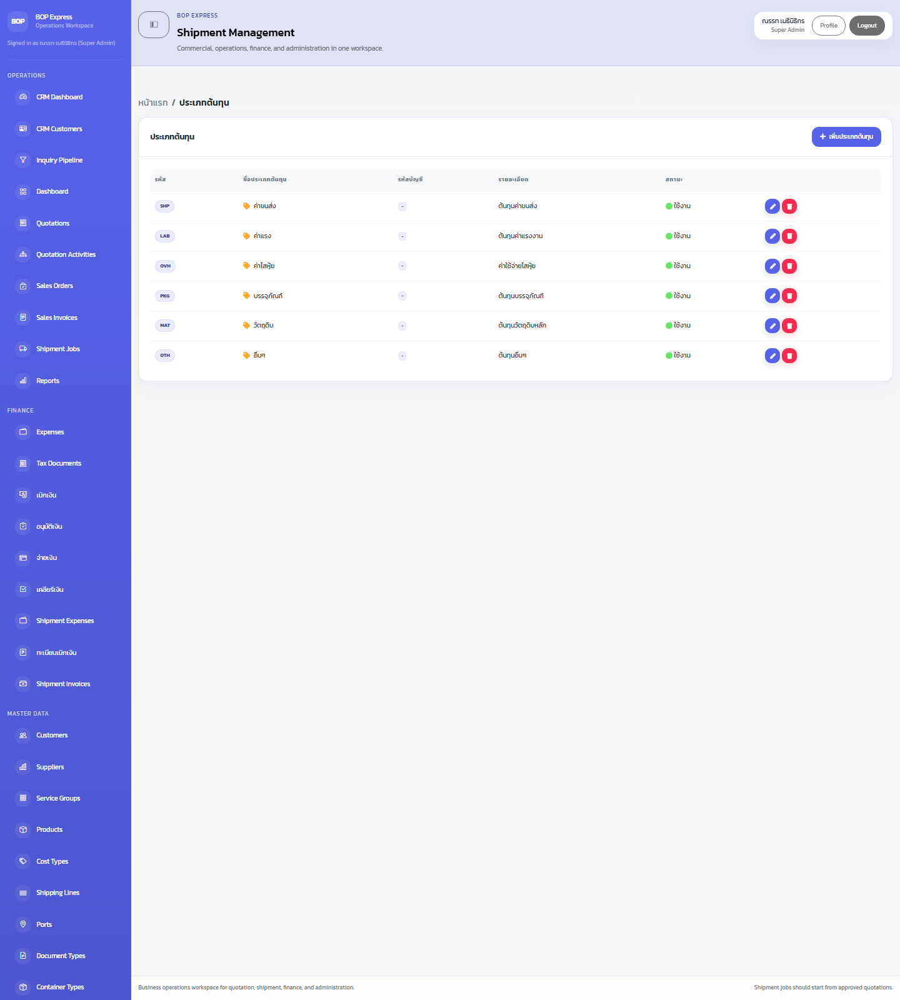
25.Shipping Lines
สายเรือ/สายการเดินเรือ
คอลัมน์: Code, Name, SCAC, Contact, Status — เช่น CMA CGM, Evergreen, Hapag-Lloyd, Maersk, MSC, ONE
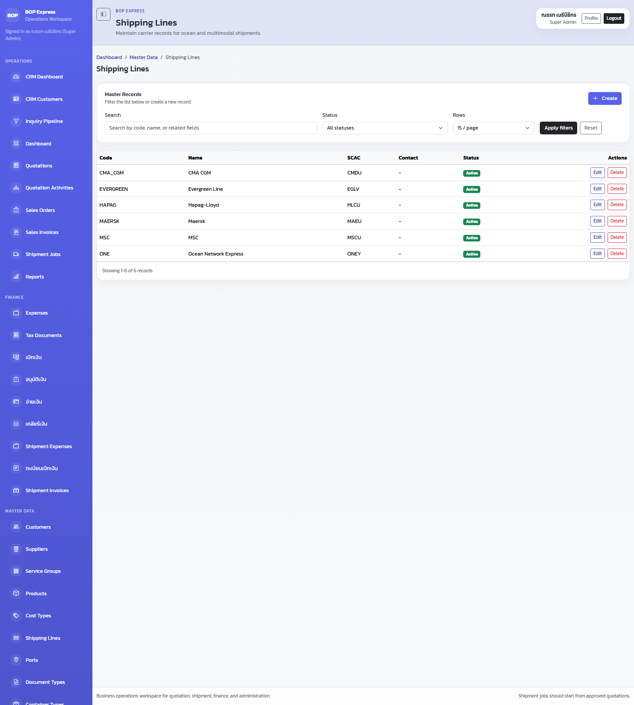
26.Ports
ท่าเรือ/ท่าอากาศยาน สำหรับต้นทาง (POL) และปลายทาง (POD)
คอลัมน์: Code, Port, Country, Type (sea/air), Status — เช่น Bangkok, Laem Chabang, Hong Kong, Rotterdam, Shanghai, Singapore
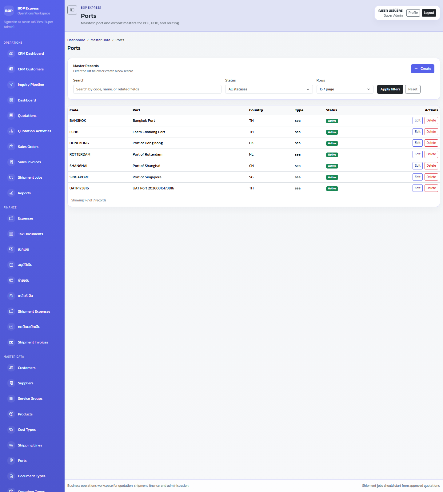
27.Document Types
ประเภทเอกสารในระบบ พร้อมหมวดและการกำหนดว่าจำเป็นหรือไม่
คอลัมน์: Code, Name, Category (transport/customs/commercial/finance), Required, Status — เช่น BL, DO, SI, Invoice, Packing List, Import/Export Entry, CO, Receipt, Tax Invoice
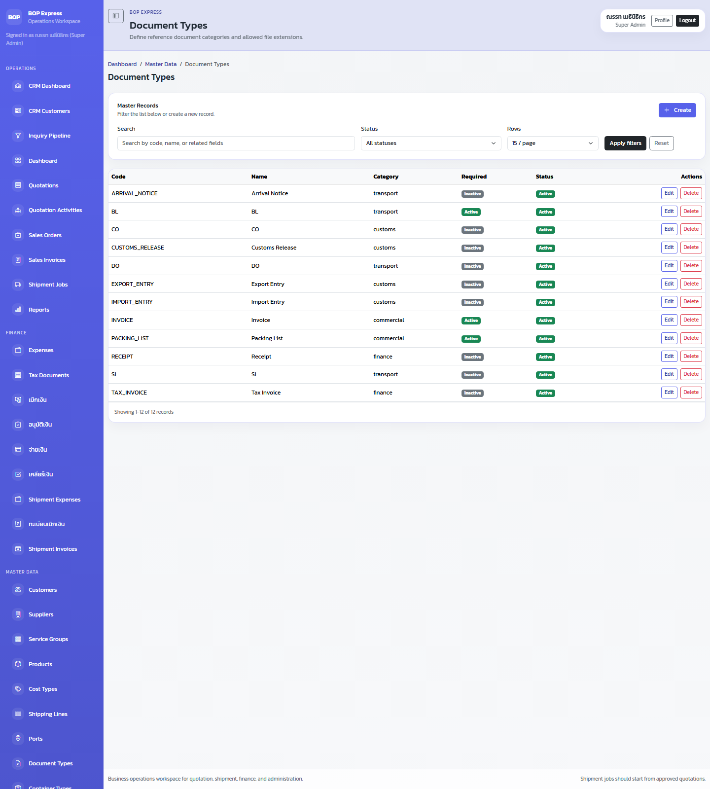
28.Container Types
ประเภทตู้คอนเทนเนอร์
คอลัมน์: Code, Name, ISO, Size (ft), Status — เช่น 20GP, 20RF, 40GP, 40HC, 40RF, 45HC
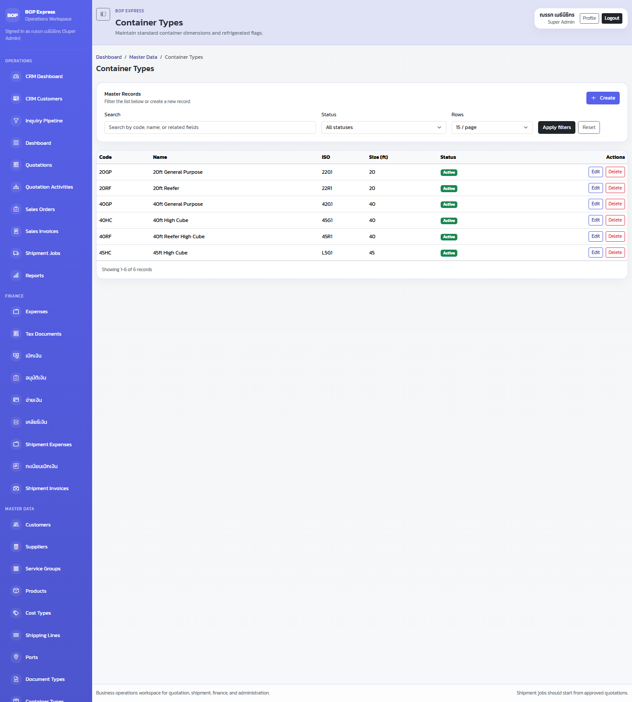
29.Job Statuses
กำหนดลำดับสถานะของงานชิปเมนต์ (ลากผ่านทั้ง lifecycle)
คอลัมน์: Code, Status, Order (ลำดับ), Closed (ปิดงานหรือไม่), Active — ลำดับ: New → Booking → Documentation → In Transit → Arrived → Customs Clearance → Delivered → Closed / Cancelled
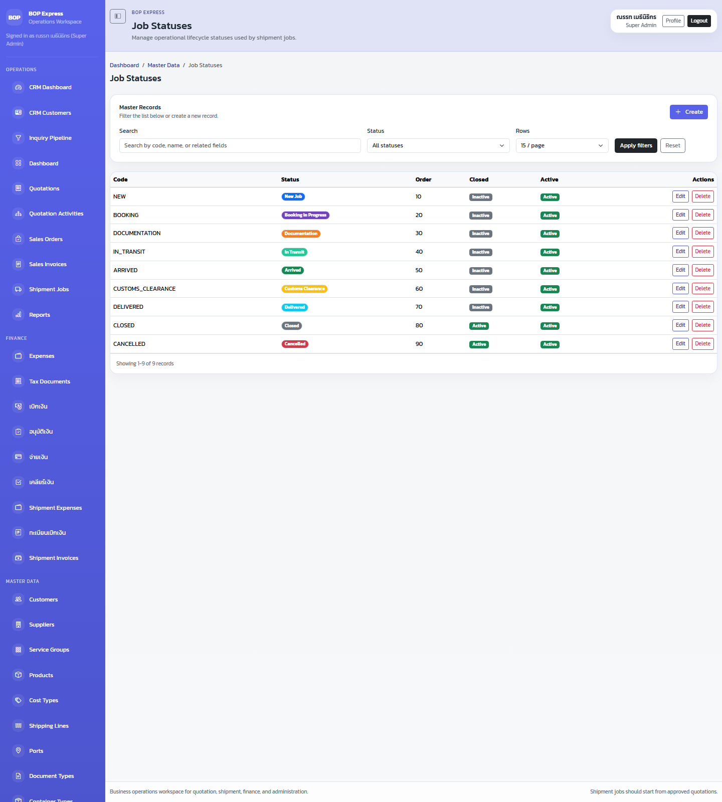
30.Customs Statuses
กำหนดลำดับสถานะพิธีการศุลกากร
คอลัมน์: Code, Status, Order, Closed, Active — ลำดับ: Not Started → Preparing → Submitted → Under Examination → Duty Pending → Hold → Released / Not Required
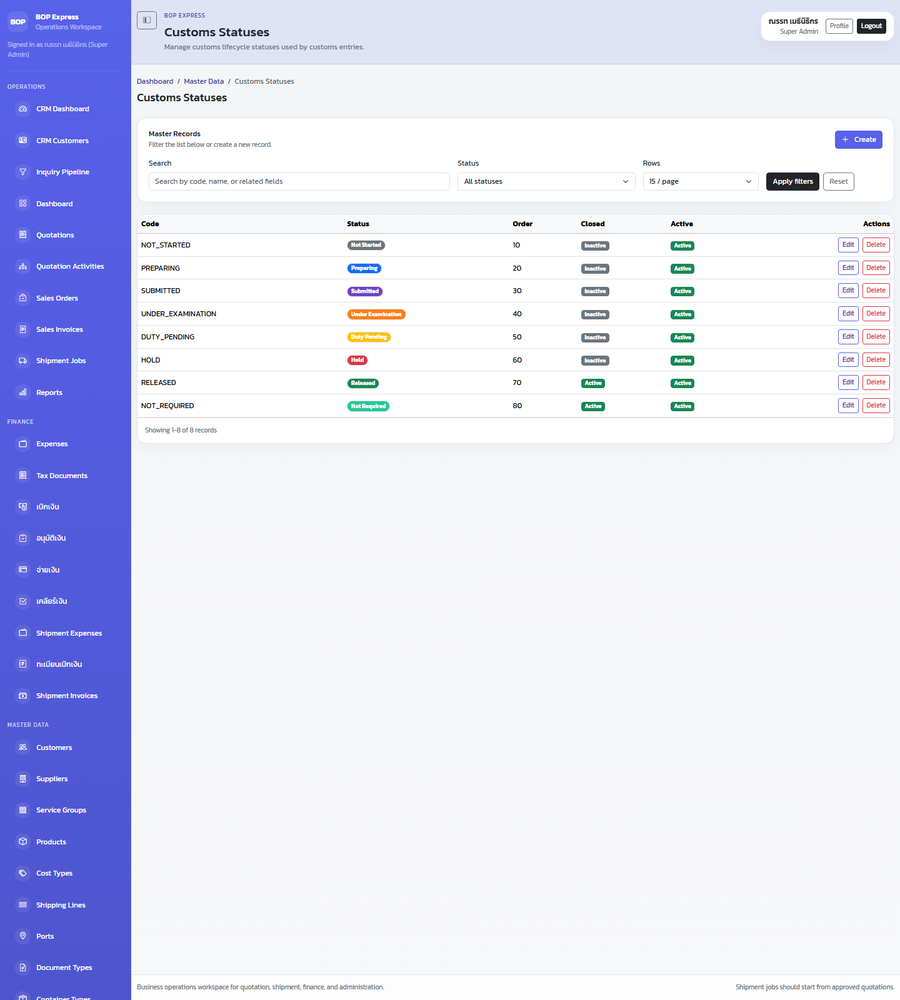
หมวด Administration
31.Users — จัดการผู้ใช้
จัดการบัญชีผู้ใช้ทั้งหมด กำหนดบทบาท เปิด/ปิดการใช้งาน และรีเซ็ตรหัสผ่าน
- ตัวกรอง: Search (username/ชื่อ/อีเมล), Role, Status, Rows แล้วกด Apply
- ปุ่มสร้าง: Create User
- คอลัมน์: USERNAME, FULL NAME, EMAIL, ROLE, STATUS, LAST LOGIN
- ปุ่มในแต่ละแถว: Edit (แก้ไขข้อมูล/บทบาท/รีเซ็ตรหัสผ่าน), Disable (ระงับการใช้งาน), Delete (ลบ)
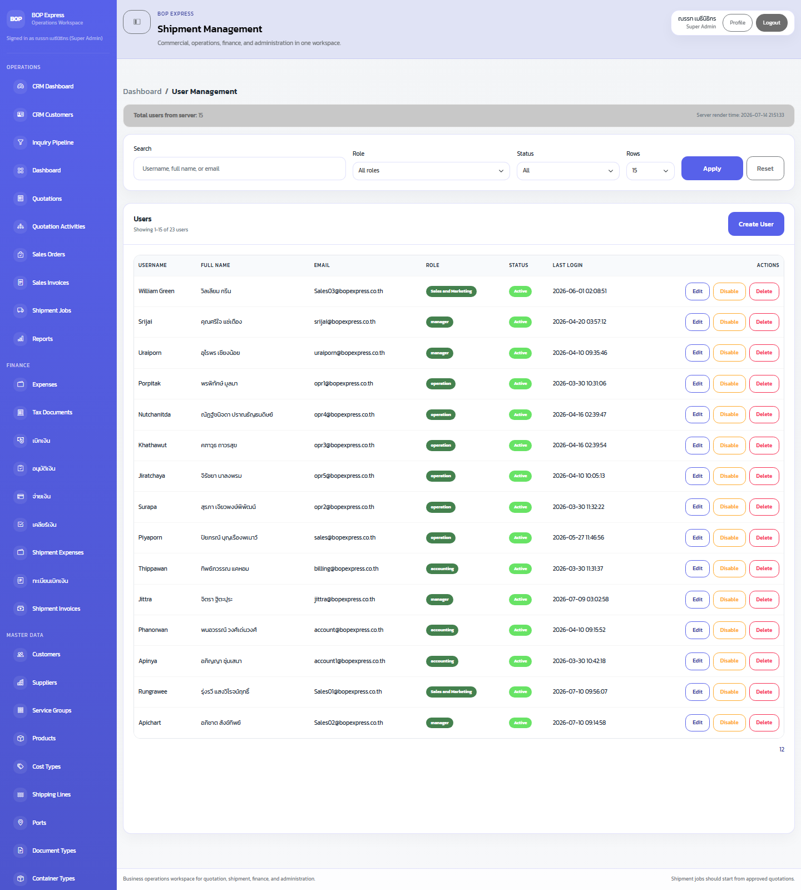
32.Roles — บทบาท/สิทธิ์
กำหนดบทบาทและสิทธิ์การเข้าถึง — ปุ่มสร้าง: เพิ่มบทบาทใหม่
| # | บทบาท | คำอธิบาย |
|---|---|---|
| 1 | Super Admin | ผู้ดูแลระบบสูงสุด มีสิทธิ์ทุกอย่าง |
| 2 | admin | ผู้ดูแลระบบ เข้าถึงงานปฏิบัติการได้กว้าง |
| 3 | manager | ตรวจอนุมัติ คุณภาพงาน และข้อยกเว้นเชิงปฏิบัติการ |
| 4 | Staff | พนักงานทั่วไป |
| 5 | operation | ดำเนินงานชิปเมนต์ เอกสาร และประสานงาน |
| 6 | accounting | ค่าใช้จ่าย การวางบิล และกระทบยอดใบแจ้งหนี้ |
| 7 | Sales and Marketing | หาลูกค้าใหม่ ดูแลลูกค้าเดิม ทำใบเสนอราคา และปิดการขาย |
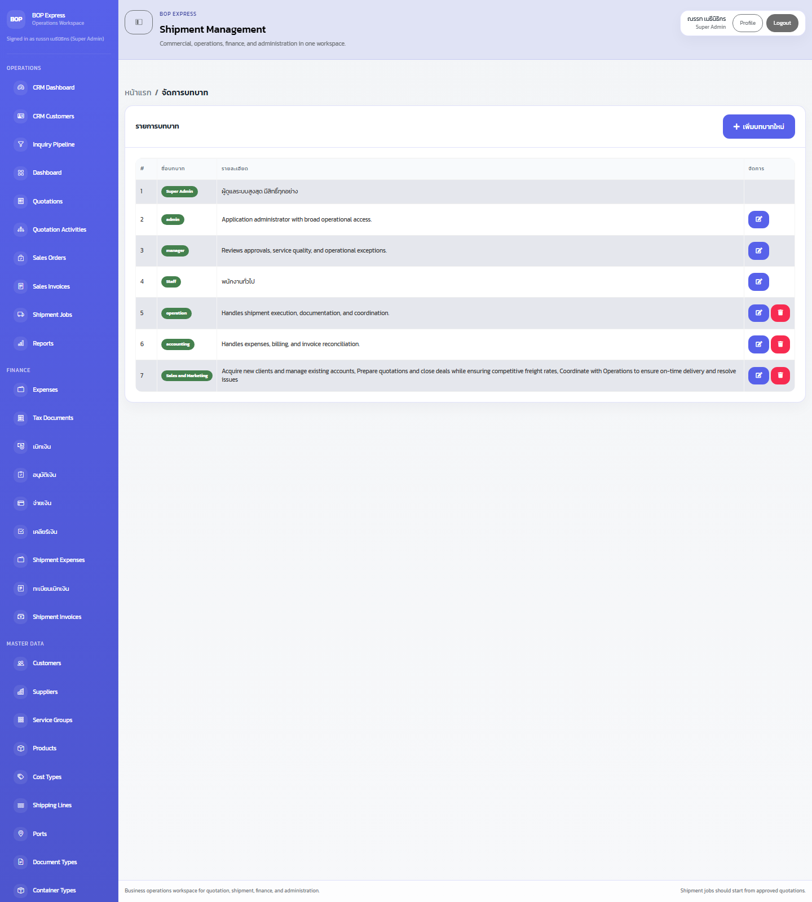
33.System Settings — ตั้งค่าระบบ
ศูนย์รวมการตั้งค่าระบบ แบ่งเป็นกลุ่มการ์ด (กดเข้าไปแก้ไขแต่ละกลุ่ม)
| กลุ่มตั้งค่า | รายละเอียด |
|---|---|
| สำรองข้อมูล | ตั้งค่าการสำรองข้อมูลอัตโนมัติ |
| การคำนวณ | ทศนิยม, อัตราภาษี, วิธีคำนวณต้นทุน |
| ข้อมูลบริษัท | ชื่อบริษัท โลโก้ ที่อยู่ สำหรับออกเอกสาร |
| ตั้งค่าเอกสาร | เฮดเดอร์/ฟุตเตอร์ รูปแบบเลขที่เอกสาร เงื่อนไข |
| อัตราแลกเปลี่ยน | แหล่งข้อมูลอัตราแลกเปลี่ยนและการนำเข้ารายวัน |
| ตั้งค่าทั่วไป | ชื่อแอป ภาษา สกุลเงิน รูปแบบวันที่ ธีมสี |
| การแจ้งเตือน | อีเมลแจ้งเตือน และสินค้าใกล้หมด |
| Quotation Template Mapping | keyword mapping สำหรับแนะนำเทมเพลตจากชื่อ item |
ด้านบนมีลิงก์ไป สถานะเอกสาร และ Theme Preview
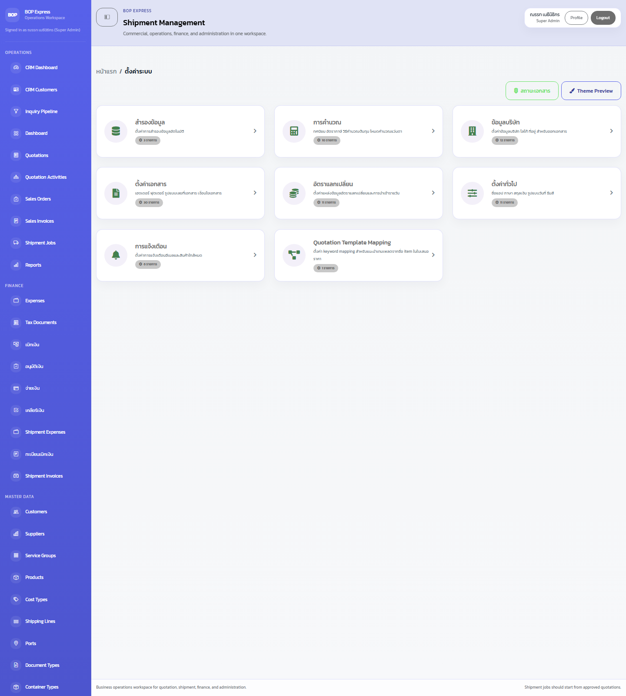
34.Document Statuses — จัดการสถานะเอกสาร
กำหนดชื่อ สี และลำดับของสถานะ แยกตามประเภทเอกสาร
- เลือกประเภทเอกสาร: ใบเสนอราคา / ใบสั่งขาย / ใบแจ้งหนี้
- เพิ่มสถานะใหม่ผ่านฟอร์ม: status_key (ใช้ a–z, 0–9, _), ชื่อแสดงผล, สี, ลำดับ, เปิดใช้งาน
- ใบเสนอราคา: แบบร่าง, ส่งแล้ว, อนุมัติ, ปฏิเสธ, หมดอายุ, สร้างใบสั่งขายแล้ว
- ใบสั่งขาย: แบบร่าง, ยืนยัน, กำลังดำเนินการ, จัดส่งแล้ว, ส่งถึงแล้ว, ยกเลิก
- ใบแจ้งหนี้: แบบร่าง, ส่งแล้ว, ชำระบางส่วน, ชำระแล้ว, เกินกำหนด, ยกเลิก
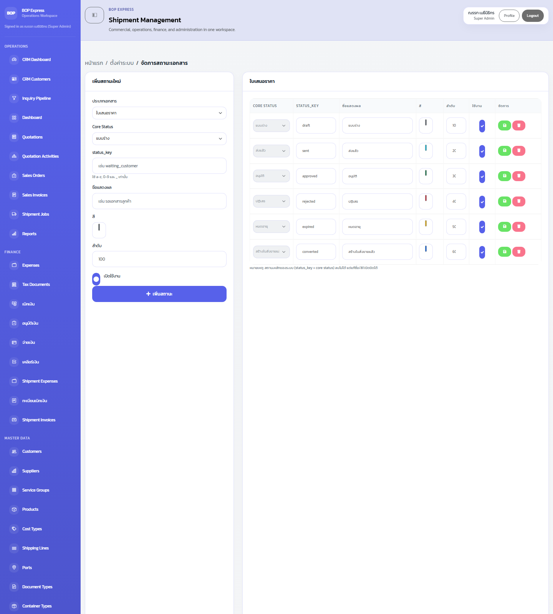
35.Audit Logs
บันทึกการเปลี่ยนแปลงทั้งหมดในระบบ สำหรับตรวจสอบย้อนหลัง
- คอลัมน์: When (เวลา), User (ผู้ทำ), Job No, Entity, Action, Module
- Entity ที่ติดตาม: shipment_job, cash_request, invoice, job_expense, customs_entry, document, container
- Action: created, updated, deleted, status_changed, approve, save, finance_submit, uploaded, downloaded
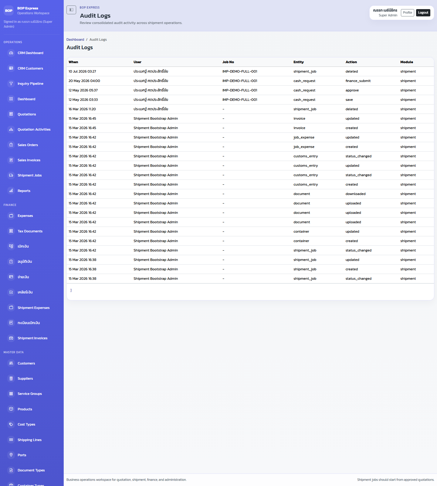